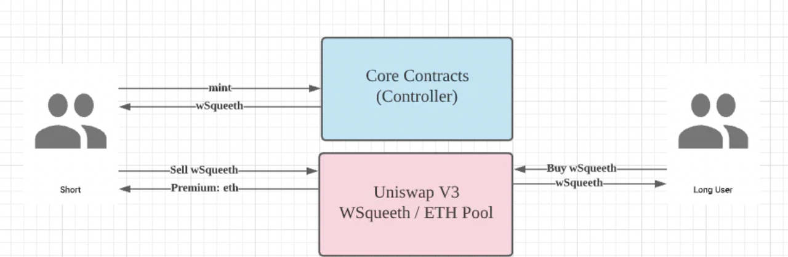
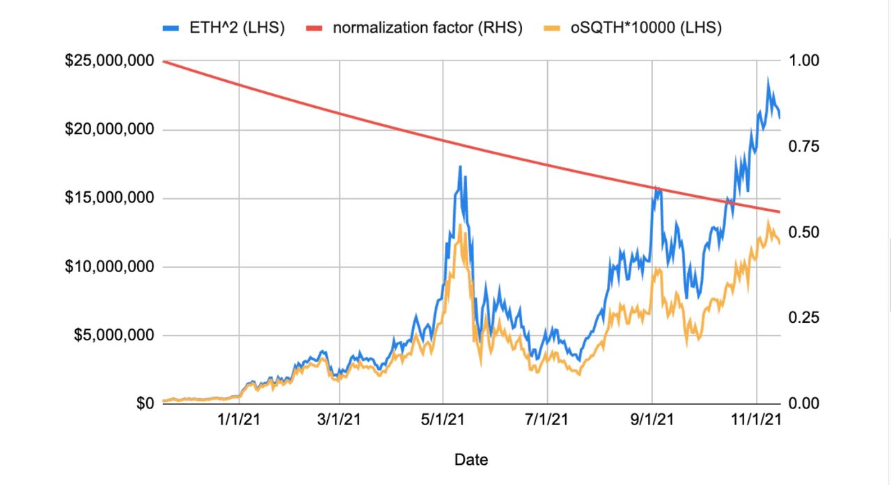
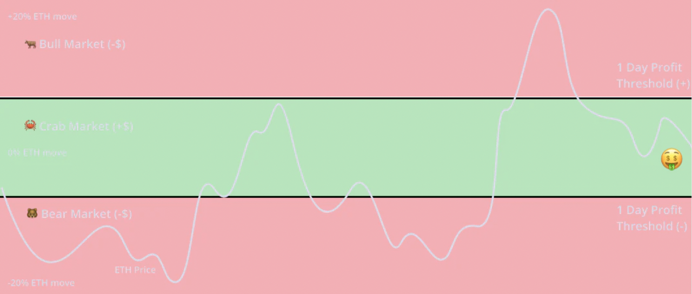
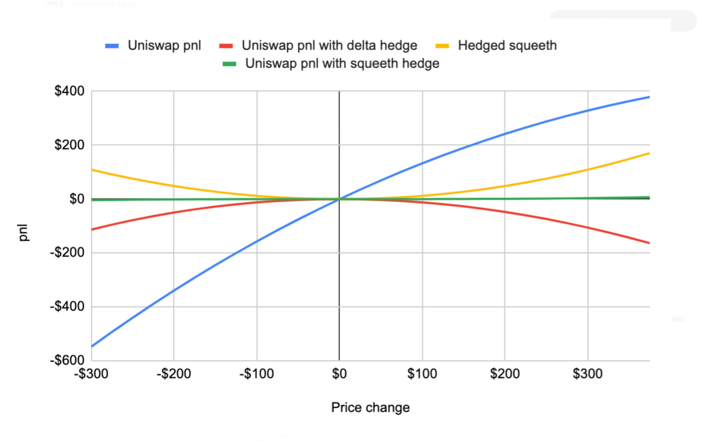

Squeeth 深度解析
Squeeth 深度解析
引言
Squeeth 是由 Opyn 团队推出的一款新型金融衍生品，其名称源自 "Squared ETH" 的缩写，旨在为用户提供一种与 ETH 价格平方相关的投资工具。Squeeth 与杠杆代币类似，交易者通过持有特定的 ERC-20 代币（oSQTH）来跟踪标的资产的价格，而无需承担被强制平仓的风险。然而，与传统的杠杆产品不同，Squeeth 的收益曲线是非线性的，具有独特的优势和特点。
本文将深入探讨 Squeeth 的产品机制、资金费用收取机制、投资策略，以及其在去中心化金融（DeFi）生态系统中的应用。
产品机制
1. Squeeth 的特点
- 非线性收益：Squeeth 的收益曲线遵循 ( y = x^2 ) 的函数关系，当 ETH 价格上涨时，收益呈加速增长。
- 无强平风险的多头：用户可以通过购买 oSQTH 来做多 Squeeth，无需担心被强制平仓。
- 杠杆效应：当 ETH 价格上涨 5 倍时，Squeeth 的价值上涨 25 倍，提供了放大的收益。
- 资金费用机制：通过类似资金费率的机制，将 Squeeth 的价格锚定到 ETH 价格的平方。
- 无到期日：与期权不同，Squeeth 没有到期日，流动性更好。
下图是 Squeeth、杠杆、永续合约、期权四类金融衍生品的特点对比：
2. 参与者类型
Squeeth 合约有三种主要参与者：
- 做多者：购买 oSQTH，看涨 ETH 价格，无强平风险。
- 做空者：抵押 ETH，铸造并出售 oSQTH，押注 ETH 价格下跌，需保持足够的抵押品以防清算。
- 流动性提供者（LP）：提供 oSQTH 与 ETH 的流动性，赚取交易手续费和资金费用。

3. 做多与做空机制
做多（购买 oSQTH）
- 操作方式：直接在 Uniswap 或 Squeeth 平台上购买 oSQTH。
- 收益特点：无强制平仓风险，享受 ETH 价格上涨带来的放大收益。
- 风险：ETH 价格下跌会导致 oSQTH 价值下跌，但由于没有强平风险，最大损失为初始投资额。
做空（铸造并出售 oSQTH）
- 操作方式：
- 在 Squeeth 平台上抵押 ETH。
- 铸造 oSQTH 并在市场上出售。
- 收益特点：如果 ETH 价格下跌，负债（oSQTH 的价值）下降，抵押品价值下降，但降幅小于负债的降幅，获得收益。
- 风险：
- 清算风险：当抵押比例低于 150% 时，合约将触发清算，做空者将损失部分抵押品。
- 价格风险：ETH 价格上涨导致负债价值以平方倍数增加，可能导致抵押比例下降。
示例计算
初始状态：
抵押品：价值 ( V_{} ) 的 ETH。
负债：铸造并出售 ( N ) 个 oSQTH，初始负债价值为 ( V_{} )。
初始抵押率（Collateral Ratio）：
\[ CR = \frac{V_{\text{ETH}}}{V_{\text{oSQTH}}} \]
ETH 价格翻倍时：
抵押品价值：( V{} = 2 V{} )。
负债价值：( V{} = (2)^2 V{} = 4 V_{} )。
新的抵押率：
\[ CR_{\text{new}} = \frac{2 \times V_{\text{ETH}}}{4 \times V_{\text{oSQTH}}} = \frac{1}{2} \times CR \]
抵押率下降，可能触发清算。
4. 流动性提供者（LP）
- 操作方式：
- 方式一：抵押 ETH，铸造 oSQTH，组建 oSQTH/ETH 的 LP。
- 方式二：直接购买 oSQTH，与 ETH 一起提供流动性。
- 收益特点：赚取交易手续费和资金费用，但面临无常损失和资金费用损失的风险。
- 风险：
- 资金费用损失：持有 oSQTH 需要支付资金费用，可能导致收益减少。
- 清算风险：如果是通过铸造 oSQTH 的方式提供流动性，可能面临清算风险。
资金费用收取机制
1. 资金费用机制的特点
- 无现金流转移：与传统永续合约的资金费率机制不同，Squeeth 的资金费用收取过程不产生现金流的直接转移，减少了操作次数和复杂性。
- 标准化因子（Normalization Factor）：引入标准化因子来调整 oSQTH 的价值，使得资金费用体现在 oSQTH 的价格中。
2. 标准化因子的计算
债务价值公式：
\[ \text{债务价值（以 ETH 计）} = \text{原始债务金额} \times \text{标准化因子} \times \text{ETH 价格} \]
资金费用的体现：标准化因子随着时间变化，大部分时间为正数，导致债务价值逐渐缩水，这部分价值相当于多头支付给空头的资金费用。
3. Squeeth 价格的锚定
价格关系：
\[ \text{Squeeth 价格} = \text{ETH 价格}^2 = \frac{10,000 \times \text{oSQTH 美元价格}}{\text{标准化因子}} \]
调整因子：将标准化因子按 10,000 缩放，以将数字置于更自然的单位中。
4. 标准化因子的调节机制
百分比变化：
\[ \text{标准化因子的百分比变化} = \text{Squeeth 价格} 与 {ETH}^2 {之间的差异百分比} \]
市场机制：
- 当 Squeeth 价格过高：偏离 ETH^2，吸引更多用户抵押 ETH 铸造 oSQTH，卖出以平抑价格。
- 当 Squeeth 价格过低：用户更倾向于回购 oSQTH 偿还债务，减少市场供给，推动价格回升。
5. 实际表现
- 2021 年表现：ETH 价格平方上涨了 90 倍，而 oSQTH 价格仅上涨了 50 倍，两者的差异即为资金费用的成本。 
投资策略
1. 螃蟹策略（Crab Strategy）
- 定义：螃蟹策略是一种风险中性策略，旨在稳定获取资金费用收入，对 ETH 价格波动不敏感。
- 操作步骤：
- 做空 oSQTH：抵押 ETH，铸造并卖出 oSQTH。
- Delta 对冲：通过持有一定数量的 ETH，调整组合中 oSQTH 和 ETH 的头寸比例，使得组合的 Delta 风险为零。
- 收益来源：主要来自做空 oSQTH 获得的资金费用收入。
- 风险：
- 清算风险：需要定期调整头寸，保持足够的抵押比例。
- 价格剧烈波动：如果 ETH 价格单日波动超过一定范围，可能导致策略亏损。
2. 螃蟹策略的盈利条件
- 数据分析：根据历史数据，只要 ETH 每日价格波动在 ±4.99% 范围内，螃蟹策略都可以保持盈利。
- 适用人群：风险偏好较低，期望稳定收益的投资者。
3. 其他策略
- 牛市做多策略：购买 oSQTH，看涨 ETH 价格，享受平方收益。
- 熊市做空策略：做空 oSQTH，押注 ETH 价格下跌，但需承担清算风险。

应用场景
1. 对冲无常损失
- 背景：在 Uniswap 等 AMM 平台提供流动性时，面临无常损失（Impermanent Loss）的风险，且损失曲线是非线性的。
- Squeeth 的作用：由于 Squeeth 的非线性收益曲线，可以通过构建组合来对冲无常损失。
- 对冲方式：
- 建立对冲头寸：持有一定数量的 Squeeth，与 LP 头寸相匹配。
- 收益平衡：当市场波动导致 LP 产生无常损失时，Squeeth 的收益可以弥补损失。
 对冲方式详见：https://medium.com/opyn/hedging-uniswap-v3-with-squeeth-bcaf1750ea11
2. 提高投资组合的收益潜力
- 放大收益：利用 Squeeth 的平方收益特性，在看涨 ETH 时，可以获得比线性工具更高的收益。
- 风险管理：通过对冲策略，控制投资组合的风险暴露。
数学模型与公式
1. Squeeth 的定价公式
Squeeth 价格（以美元计）：
\[ \text{Squeeth 价格} = \frac{\text{ETH 价格}^2 \times \text{标准化因子}}{10,000} \]
标准化因子更新：
\[ \text{标准化因子}_{t+1} = \text{标准化因子}_t \times \left(1 + \frac{\text{Squeeth 价格偏差}}{\text{ETH 价格}^2}\right) \]
2. Delta 对冲
组合的 Delta：
\[ \Delta_{\text{组合}} = \Delta_{\text{ETH}} \times N_{\text{ETH}} + \Delta_{\text{oSQTH}} \times N_{\text{oSQTH}} \]
目标：调整 ( N{} ) 和 ( N{} )，使得 ( _{} = 0 )。
3. 清算条件
抵押率计算：
\[ \text{抵押率（CR）} = \frac{\text{抵押品价值}}{\text{负债价值}} \]
清算触发：当 ( CR < 150% ) 时，系统将触发清算。
风险与注意事项
- 清算风险：做空或提供流动性时，需保持足够的抵押品，防止被清算。
- 价格波动风险：Squeeth 的非线性特性放大了价格波动的影响，需谨慎管理风险。
- 资金费用成本：长期持有 oSQTH 需要支付资金费用，可能侵蚀收益。
- 复杂性：Squeeth 的机制较为复杂，建议用户在充分理解其原理后再参与。
总结
Squeeth 作为一种创新的 DeFi 衍生品，为用户提供了全新的投资和对冲工具。其独特的非线性收益曲线、无到期日和灵活的策略选择，使其在市场上具有独特的吸引力。然而，用户在参与时需充分了解其机制和风险，谨慎制定投资策略。